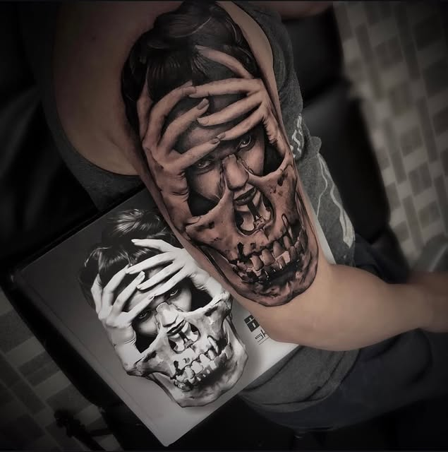
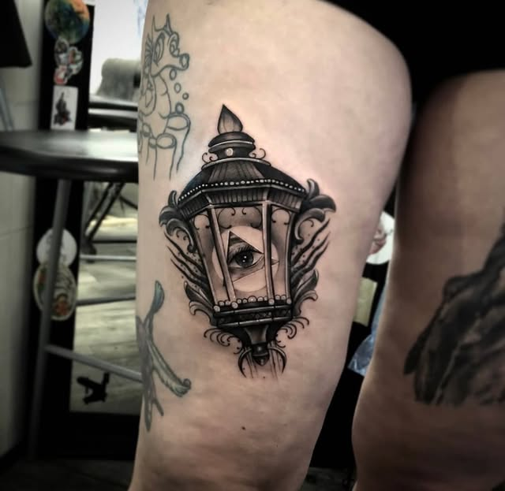
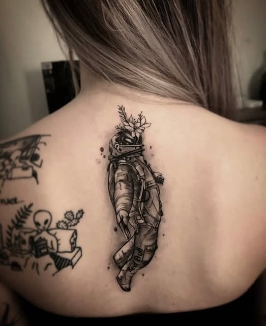
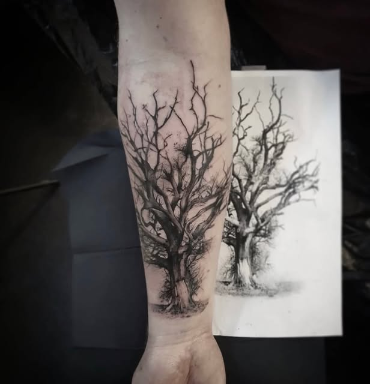
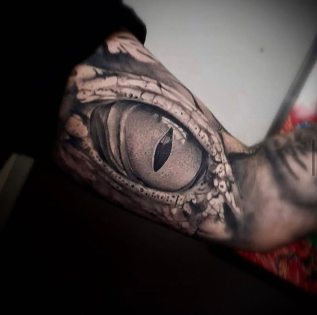
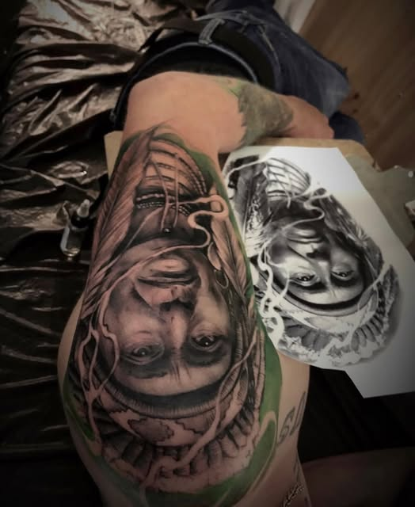
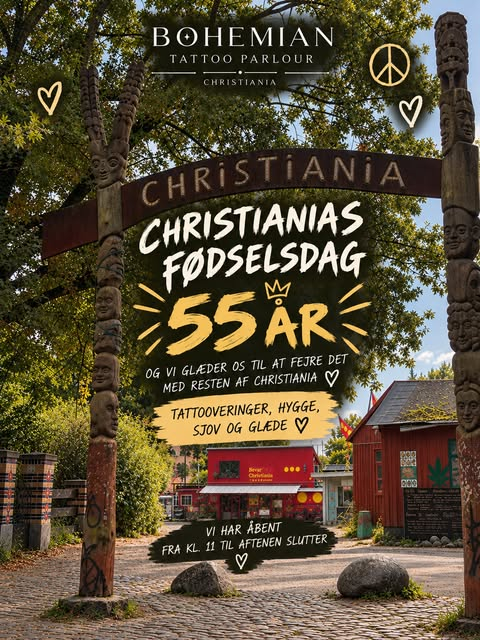
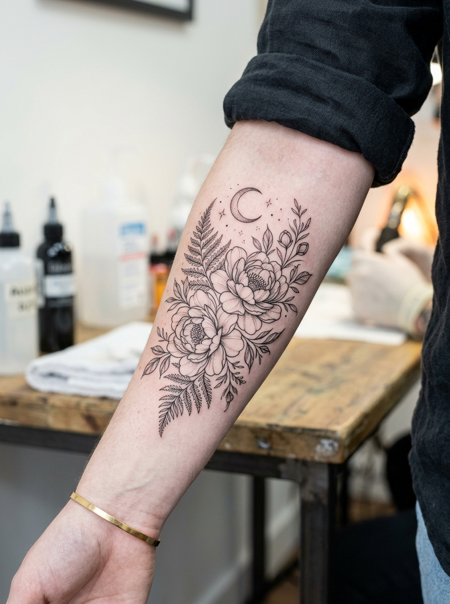
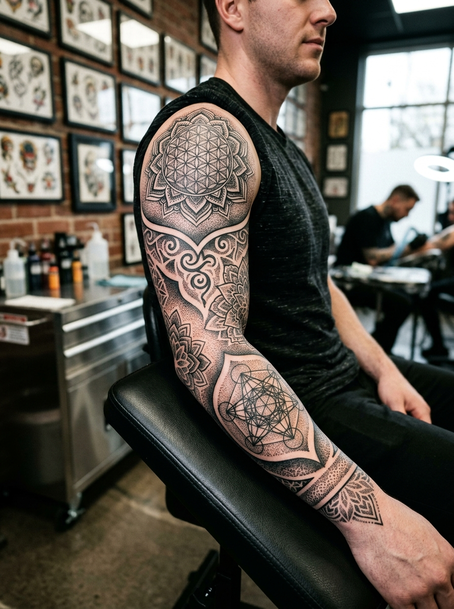
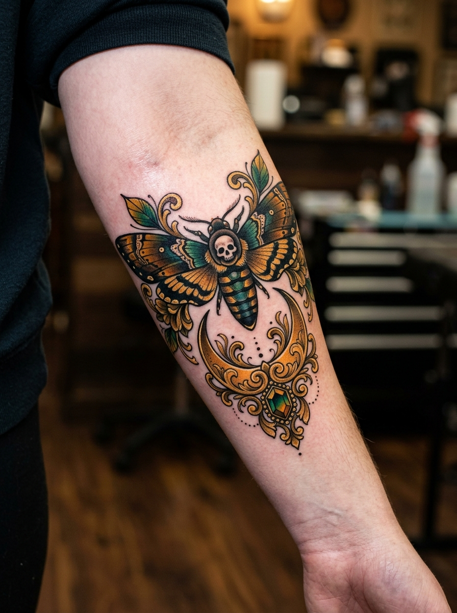

Officielt Studiosegl
Bohémian Tattoo Emblem
Christiania, København

Blackwork & Realisme
Surrealistisk Skull & Face
Udført hos Bohémian Tattoo Parlour

Blackwork & Custom
Esoterisk Lanterne
Udført hos Bohémian Tattoo Parlour

Fine Line & Illustrativ
Astronaut & Botanisk Lilje
Udført hos Bohémian Tattoo Parlour

Blackwork & Natur
Livets Træ
Udført hos Bohémian Tattoo Parlour

Realisme
Fotorealistisk Reptiløje
Udført hos Bohémian Tattoo Parlour

Realisme & Portræt
Shamanistisk Portræt
Udført hos Bohémian Tattoo Parlour

Fristaden Event & Flash
Christiania 55 Års Fødselsdag
Fejret hos Bohémian Tattoo Parlour

Fine Line & Botanisk
Botanisk Pæon & Bregne
Fineline Specialist

Blackwork & Geometri
Hellig Geometri Sleeve
Sacred Geometry Specialist

Neo-Traditional
Natsværmer & Guldfiligran
Custom Art